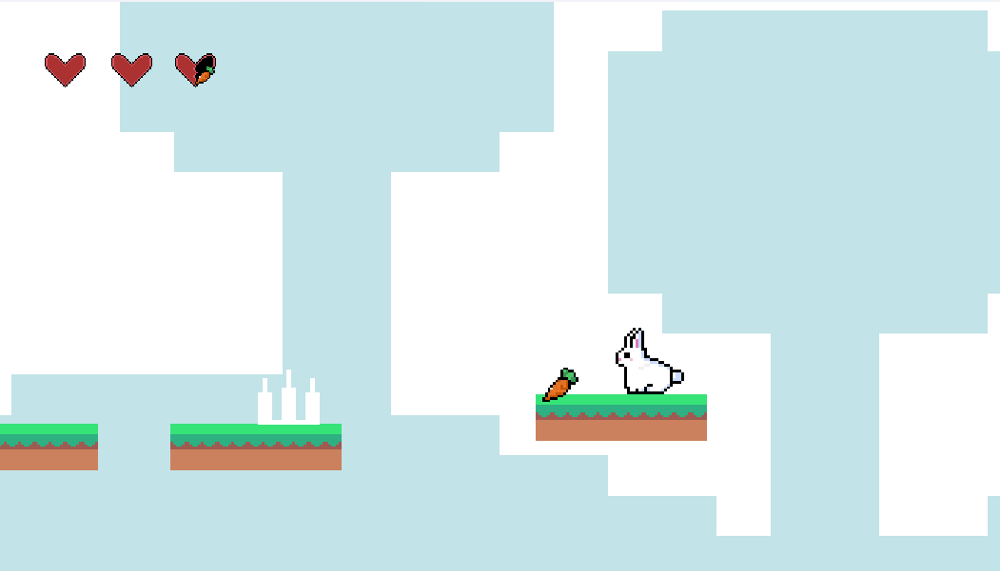

A 2D platformer I'm building on my own in GameMaker, starring a bunny named Ruby. It's an ongoing project where I'm learning game development by making a real game end to end, writing the gameplay systems and drawing the art and UI myself rather than following a single tutorial.
Overview
Learning game development by shipping the whole thing
I started The Flower to get past tutorial-sized projects and build something complete. That meant owning the parts that are easy to skip: not just making the character move, but giving the game a health system, collectibles, hazards, and a protagonist with a consistent look. Working solo means every system and every sprite is a decision I have to make and connect to the rest of the game.
The project is still early, but it's already playable, and building it has shown me how closely the code and the art depend on each other for a game to feel finished.
Protagonist
Ruby, drawn frame by frame
Ruby's walk is a six-frame pixel-art cycle I drew and wired to her movement in GameMaker, so the animation speed matches how fast she actually moves. The sprite below is the real in-game sheet, running live.
Ruby walk cycle. Six 32×32 frames played in sequence. Drawing the animation myself made me think about timing and weight, not just the code that triggers it.
Systems
What's built so far
Each of these is implemented in GML and wired together in the current build. They're the foundation I'm expanding levels and content on top of.
Movement & animation
Responsive run and jump for Ruby, with the walk cycle synced to her speed.
Double jump
A second mid-air jump that gives platforming more range and control.
Heart-based health
A health system tracked in hearts, so damage and survival are easy to read at a glance.
Carrot collection
Collectible carrots placed through the levels as the game's pickups.
Hazards
Obstacles that damage Ruby, creating risk and pacing in each level.
Slope physics
Basic slope handling so Ruby moves naturally over uneven ground, not just flat tiles.
In the game
Current build

Where it's going. The core feels good, so the next work is content and polish: more levels built on these systems, a story for Ruby, and dialogue and level transitions to tie it together. Building solo has been the point, it's taught me how movement, art, UI, and level design all have to agree for a game to feel whole.